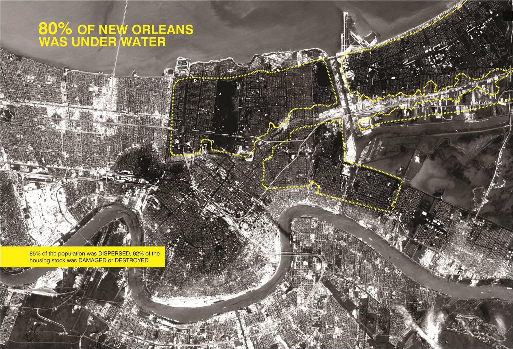
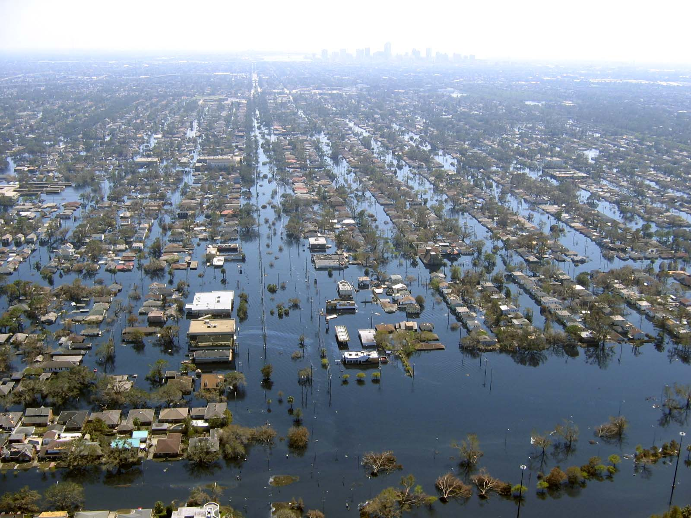

"When Brad Pitt launched Make It Right, he promised the residents of the Lower 9th Ward that he would help them build back stronger, safer and better able to survive the next storm or flood. The Float House is helping us deliver on that promise." – Tom Darden, Executive Director, Make It Right Foundation
In 2008, a partnership with the City of New Orleans and the Make it Right Foundation resulted in the Float House, an innovative home typology for residents of flood-prone areas that is able to safely rise with waters during a flood.
Katrina Hurricane devastated New Orleans in August 2005. The Ninth Ward was hit the hardest, devastating residents and rendering their neighborhoods uninhabitable. A policy of relocation was met with resistance as residents attempted to salvage their homes and neighborhoods.

Designed in response to Ninth Ward residents' needs, the Float House serves as a scalable prototype that can be mass-produced and adapted to the needs of communities world-wide facing similar challenges post-disaster. As a certified LEED Platinum building, the state-of-the-art home uses high-performance systems, energy efficient appliances, and prefabrication methods to produce an affordable, sustainable house that generates its own power, minimizes resource consumption and collects its own water.
Like the traditional New Orleans "shotgun" house, the Float House sits on a raised four-foot base, preserving the community's vital front porch culture and facilitating accessibility for elderly and disabled residents. This high-performance "chassis" is a prefabricated module, made from polystyrene foam coated in glass fiber reinforced concrete, which hosts all of the essential equipment to supply power, water and fresh air. The chassis is engineered to support a range of home configurations.
A new approach to mass-producing low-cost homes that respond to local culture and climate
The FLOAT House optimizes the efficiency of mass-production, while respecting New Orleans's unique culture and context. The Ninth Ward's colorful vernacular houses, which local residents have traditionally modified and personalized over time, reflect the community's vibrant culture. The Float House grows out of the indigenous typology of the shotgun house, predominant throughout New Orleans and the Lower Ninth Ward. Like a typical shotgun house, the Float House sits atop a raised base. This innovative base, or "chassis," integrates all mechanical, electrical, plumbing and sustainable systems, and securely floats in case of flooding. Inspired by GM's skateboard chassis, which is engineered to support several car body types, the Float House's chassis is designed to support a variety of customizable house configurations.
Developed to meet the needs of families in New Orleans's Lower Ninth Ward, the Float House is a prototype for prefabricated, affordable housing that can be adapted to the needs of flood zones worldwide. The Float House is assembled on-site from pre-fabricated components:
The modular chassis is pre-fabricated as a single unit of expanded polystyrene foam coated in glass fiber reinforced concrete, with all required wall anchors, electrical, mechanical and plumbing systems pre-installed. The chassis module is shipped whole from factory to site, via standard flat bed trailer. The piers that anchor the house to the ground and the concrete pads on which the chassis sits are constructed on-site, using local labor and conventional construction techniques. The panelized walls, windows, interior finishes and kit-of parts roof are prefabricated, to be assembled on-site along with the installation of fixtures and appliances. This efficient approach integrates modern mass-production with traditional site construction to lower costs, guarantee quality, and reduce waste.


A flood-safe house that securely floats with rising water levels
Global climate change is triggering ever-harsher floods and natural disasters. Nearly 200 million people worldwide live in high risk coastal flooding zones, and in the US alone, over 36 million people currently face the threat of flooding. The Float House prototype proposes a sustainable way of living that adapts to this uncertain reality.
To protect from flooding, the Float House can rise vertically on guide posts, securely floating up to twelve feet as water levels rise. In the event of a flood, the house's chassis acts as a raft, guided by steel masts, which are anchored to the ground by two concrete pile caps each with six 45-foot deep piles.
Like the vernacular New Orleans shotgun house, the Float House sits on a 4-foot base; rather than permanently raising the house on ten foot or higher stilts, the house only rises in case of severe flooding. This configuration accommodates a traditional front porch, preserving of the community's vital porch culture and facilitating accessibility for elderly and disabled residents.
While not designed for occupants to remain in the home during a hurricane, the Float House aims to minimize catastrophic damage and preserve the homeowner's investment in their property. This approach also allows for the early return of occupants in the aftermath of a hurricane or flood.

A high-performance house that generates and sustains its own water and power needs
As a certified LEED Platinum Rated home, the Float House is an innovative model for affordable, net-zero annual energy consumption housing. High-performance systems sustain the home's power, air, and water needs, and minimize resource consumption:
Until the 1890s, New Orleans was an estuary. As land developed, it was in order of its elevation from high to low. Not until the early 1960s were the lowest-lying areas of marsh and wetlands drained to accommodate housing. This type of development, coupled with the reality of rising water levels and a sinking land base, presents a serious threat, both socially and technically, not just for New Orleans but also for coastal cities around the world where man-made defenses must withstand nature's forces in order to preserve unstable communities on inhospitable sites. These broader environmental implications require radical solutions.
The challenge for this project was immediately apparent: how do we occupy the land of the Lower Ninth Ward given its ecological condition? We developed a new urban strategy and architectural prototype to address these issues. At the micro scale, we wanted to maintain the street culture of New Orleans—the interaction among residents that has traditionally taken place at the stoop level. At the macro scale, we wanted a house that would respond to changes in its surrounding landscape by engineering it to break from the city grid and switch to emergency mode, at which time it becomes completely self-sufficient. The result is a highly performative, one-thousand-square-foot house that is technically innovative in terms of its safety factor—its ability to float—as well as its solar performance and its ability to collect water. The Float house is prefabricated and as a result is socially accessible and cost-efficient. It is high quality and low cost, and it can be mass produced. In addition, the Float house can detach from the city's infrastructure to exist "off the grid" for up to twenty-one days. This new way of occupying the terrain between land and water will reposition coastal cities like New Orleans to be at home on the edge.
